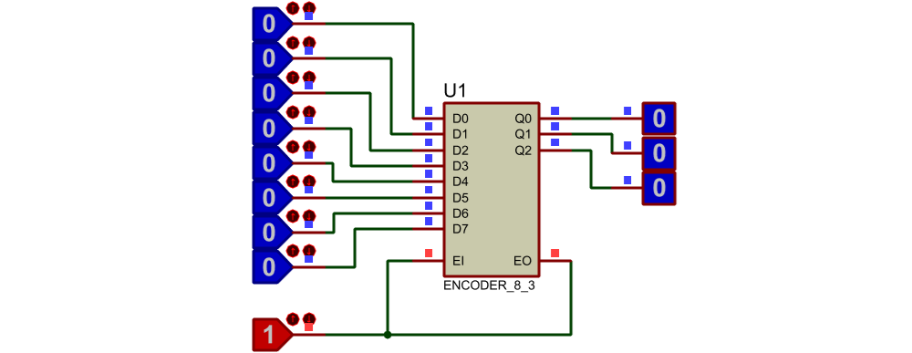
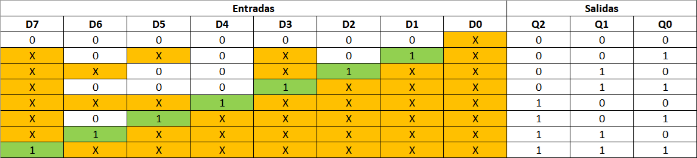
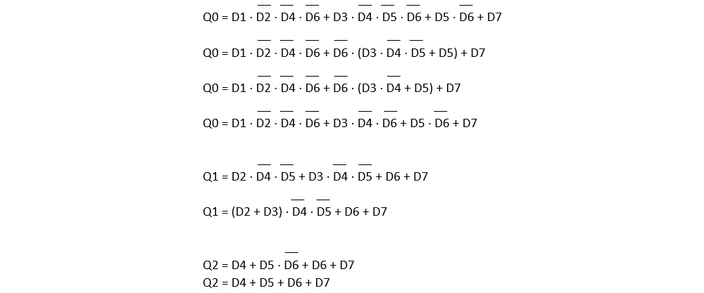

Un codificador es un circuito combinacional con N entradas donde, cada una de las entradas representa un dígito decimal, su función es obtener a la salida el código binario correspondiente a la entrada activada.
Se diseñan los codificadores con prioridad, de forma tal que si existe más de una entrada activa, la salida codifica la entrada de mayor prioridad (generalmente correspondiente al valor decimal más alto).


